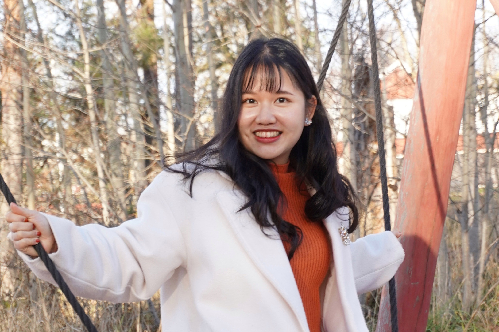

About me
Data Engineer &
Computational Social Scientist
I am a data engineer with a major in Computational Social Science. I thrive in interdisciplinary environments and enjoy collaborating with people from diverse backgrounds.
I enjoy posing for photoshoots in my free time in case you can't tell from my profile picture 👾